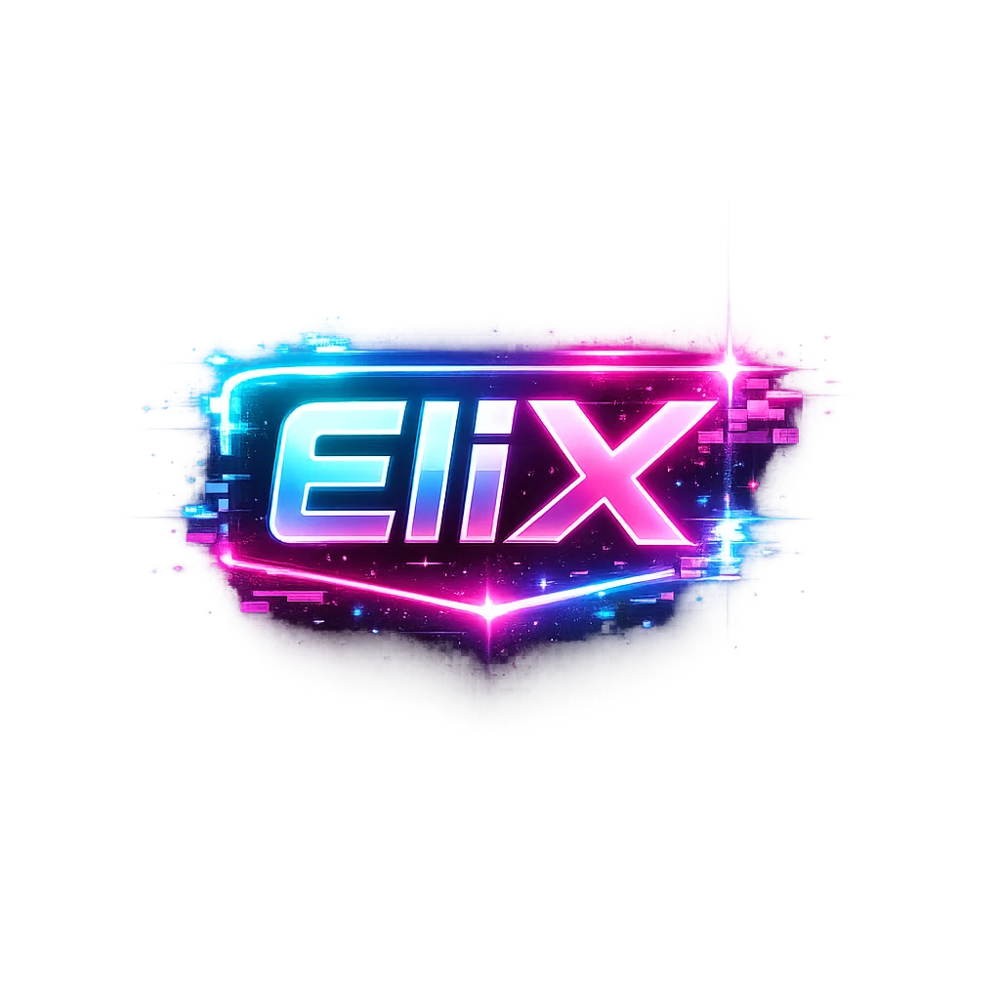

piex>_
Head of Development & Data
Das Team hinter dem Fußball
Fußball lebt von den Momenten auf und neben dem Platz. GoalNews bündelt Spielstände, Tabellen und Community-Funktionen an einem Ort – damit du schnell findest, was dich rund um deinen Fußball interessiert.
Fußballinfos und Community an einem Ort
GoalNews liefert dir Fußballnachrichten, Analysen und Highlights aus der Welt des Fußballs. Unser Fokus liegt darauf, aktuelle Informationen übersichtlich und schnell zugänglich zu machen.
Wir entwickeln die Seite Schritt für Schritt weiter – vom Liveticker und den Ligatabellen bis zu Tipps und dem Austausch mit anderen Fans.
Direkt zu den beliebtesten Bereichen
Die Menschen hinter GoalNews
Head of Development & Data

Developer & Cybersecurity
Head of Socialmedia
Aufklappen für mehr Infos
Die Bundesliga-Spieldaten auf GoalNews werden von OpenLigaDB geladen. Die Quelle ist auf den Datenseiten angegeben.
Im Dashboard kannst du deinen Lieblingsverein speichern. Passende Spielhinweise erscheinen dann auf der Startseite und auf der Vereins-Updates-Seite.
Du kannst die Seite nutzen, an Community-Funktionen teilnehmen und uns über Helfen Sie uns! Feedback senden.